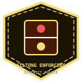

Factions & Guilds — Reverie Directorate, High Council, and City Orders
Power in Somnarak is divided between the authoritarian Reverie Directorate, the Supreme High Council, the four great artisan guilds, outskirt nomadic cartels, and underworld syndicates.
“The Directorate contains. The Council rations. The street remembers who the Taboos actually kill.”
— Faction desk, Deep Vault
Factions are the powers that share Somnarak without sharing a chain of command. The Reverie Directorate runs Facility 01. The High Council rations Veil. SED dives the Desolate. UCD answers urban breach. Guilds — Architects, Weavers, Keepers, Wardens, Collectors, Horizon Caravan, Memory Washers, Giltong, Judexhan, Menders — hold crafts the Directorate cannot staff alone.
SED and UCD articles on this wiki stay long on purpose. They are operating arms, not flavor badges. Wound Walkers and underworld notes sit at the bottom of the register because they are not Directorate organs.
THE REVERIE DIRECTORATE
Supreme authority over Facility 01 and the Hand of Change. Contains what the city cannot. Does not own the Taboos.
VIEW MASTER DOSSIER →THE HIGH COUNCIL
Civic board that rations Veil and pretends the Hand is a utility. Magnates, not Echo-Cores.
VIEW COUNCIL REGISTER →SORROW EXPLORATION DIVISION
SED. Divers into the Desolate. Long article on purpose — operating arm, not a badge color.
VIEW EXPEDITION LOGS →UNDERWORLD CONTAINMENT (UCD)
Urban breach suppression. Long article on purpose. When a cell is not available, UCD is the street answer.
VIEW TACTICAL RAIDS →THE ARCHITECTS
Builders of Veil infrastructure and of rooms the Hand later regrets. High Architects sit on a different page.
VIEW GUILD DOSSIER →THE WEAVERS
Craft of silk, memory-thread, and the civic cousin of Floor 2 shrouds. Not a fashion guild.
VIEW GUILD DOSSIER →THE KEEPERS
Hold what must not be used yet. Archives, keys, and refusals. Deep Vault's civic relatives.
VIEW GUILD DOSSIER →THE WARDENS
Street containment without a floor number. They keep people in districts the Hand cannot staff overnight.
VIEW GUILD DOSSIER →THE COLLECTORS
Relic recovery, often illegal, often useful. Zone C is their weather.
VIEW GUILD DOSSIER →THE HORIZON CARAVAN
Movement across the Desolate when SED will not sign the paper. Maps that change because the waste does.
VIEW CARAVAN LOGS →THE MEMORY WASHERS
Civic forgetting for a fee. Related to SE-009 and to why Floor 2 forbids unlogged names on Forgotten kit.
VIEW WASHING LOGS →
THE GILTONG ENFORCERS
Street law that is not Judexhan. Gold in the name is the warning, not the uniform.
VIEW ENFORCER CODE →THE JUDEXHAN
Taboo enforcement. Executioners of city law. The Directorate contains; Judexhan judges.
VIEW ARBITER DOSSIER →THE MENDERS
Repair of people and of Han-torn rooms. Not Insight Forge. Not therapy as a slogan.
VIEW MENDER DOSSIER →FOUNDING CORPORATIONS
The firms that built the Veil grid and still own pieces of Zone A the Directorate cannot seize.
VIEW CORP ARCHIVES →UNDERWORLD & WOUND WALKERS
Non-Directorate organs. Wounds that walk. Logged because they kill agents, not because they have a charter.
VIEW SYNDICATE LOGS →FACTION TECHNOLOGY
Tools that are not M.A.W. and not DSE — Veil kit, washer gear, SED dive shells.
VIEW TECH MATRIX →Governance in Somnarak is divided between the totalitarian technological mandate of the Reverie Directorate, the commercial influence of the High Council of Sights, and specialized craft guilds such as the High Architects and Master Weavers.
| Faction / Guild | Governance Role | Key Leadership | Primary Technology | Relationship to Directorate |
|---|---|---|---|---|
| Reverie Directorate | Supreme Metropolitan Authority | Director Majin | Facility 01, Han Energy Extraction, Echo-Cores | Ruler / Central Government |
| High Council of Sights | Commercial & Guild Oligarchy | The Seven Sights | Zone C Arcology Markets, Transit Networks | Uneasy Alliance / Energy Beneficiary |
| External Resource Gathering | Field Agent Minho | Reconnaissance Rigs, Kinetic Sidearms | Direct Military Sub-Branch | |
| Metropolitan Crisis Suppression | Captain Taeho | Heavy Breaching Cleavers, Tactical Armor | Internal Security Enforcement | |
| High Architects Guild | Urban Infrastructure & Fortifications | Council of Architects | Hexagonal Blueprints, Kinetic Spire Design | Founding Partners of Facility 01 |
| Master Weavers | M.A.W. Suit Synthesis & Apparel | Weaver Yeonhwa | Han-Silk Looms, Protective Veils | Official Directorate Supplier |
| Bulwark Wardens | Outer Wall Defense | Perimeter Marshals | Heavy Bastion Artillery, Searchlight Beacons | Frontline Perimeter Defense |
Overview
Somnarak's factions exist in a complex web of competition, collusion, trade, and tension. No faction is independent — all are connected, all are dependent, all are compromised.
This document maps every significant relationship between factions — the alliances, the rivalries, the debts, the betrayals, and the secrets.
I. The Power Structure
COUNCIL OF SIGHS
/ | \
/ | \
ARCHITECTS COLLECTORS KEEPERS
| | |
WARDENS WEAVERS R.D.
| | |
GILTONG JUDEXHAN MENDERS
| | |
FRAYS DESOLATE CITIZENS
The hierarchy is not absolute. The Council commands, but the factions below have their own power, their own agendas, their own secrets. The web is not a chain of command — it is a web of debts.
II. Faction Relationship Matrix
The Council of Sighs (의회 — Uihoe)
Power: Absolute — on paper. In practice, the Council rules through influence, not force.
| Faction | Relationship | Dynamic | Secret |
|---|---|---|---|
| Architects | Tension | The Council resists change; Architects push for reform | The Council has secretly blocked three Architect proposals that would have reduced Han dependency |
| Collectors | Alliance | The Council relies on Collectors for economic stability | The Council uses Collectors to enforce policies it cannot openly support |
| Keepers | Dependence | The Council needs the Archive for legitimacy | The Council has erased Archive records that contradict its official history |
| Wardens | Dependence | The Council needs the Wardens for enforcement | The Council has used Wardens to suppress dissent, not just crime |
| Weavers | Distrust | The Council fears the Dream realm's influence | The Council has secretly studied Dream-Diving for its own purposes |
| R.D. | Complex | The Council funds the R.D. but doesn't fully understand it | The Council does not know about the Absolvohan |
| Giltong | Authority | The Council commands the Giltong | The Giltong have defied the Council twice — both times over Taboo violations by Council members |
| Judexhan | Authority | The Council deploys the Judexhan | The Judexhan report to the Council's Fourth Head — not the full Council |
The Architects (건축가 — Geonchukga)
Power: Structural — they build the city, they shape the zones, they design the Veil.
| Faction | Relationship | Dynamic | Secret |
|---|---|---|---|
| Council | Tension | Architects want reform; Council resists | The Architects have a contingency plan to rebuild the city if the Council falls |
| Collectors | Conflict | Architects shelter debtors; Collectors pursue them | The Architects run secret shelters in Zone B — hidden from Collectors |
| Keepers | Tension | Architects destroy old structures; Keepers preserve them | The Architects have accidentally destroyed Archive records during construction |
| Wardens | Tension | Architect construction zones create security gaps | The Wardens have blamed Architects for security breaches that were actually Fray operations |
| Weavers | Ignored | Architects focus on the physical; Weavers focus on the Dream | The Architects do not understand the Weavers — and fear what they don't understand |
| R.D. | Cooperation | Architects build for the R.D.; R.D. provides research | The Architects have built secret passages in the R.D. facility — for emergencies |
| Menders | Alliance | Menders are the Architects' field agents | The Menders report to both the Architects and the R.D. — a conflict of loyalty |
| Frays | Conflict | Frays sabotage construction for profit | The Architects have paid Frays to protect their construction sites — a secret arrangement |
| Citizens | Respected | Citizens rely on Architects for shelter and infrastructure | The Architects are the only faction that citizens trust without reservation |
The Collectors (수금가 — Sugeumga)
Power: Economic — they control the debt system, they manage Echoes, they enforce obligations.
| Faction | Relationship | Dynamic | Secret |
|---|---|---|---|
| Council | Alliance | Collectors enforce the Council's economic policies | The Collectors have more Echoes than the Council — the power dynamic is reversed |
| Architects | Conflict | Architects shelter debtors; Collectors pursue them | The Collectors have reclassified Architect construction debts to pressure the faction |
| Keepers | Tension | Collectors trade in memories; Keepers preserve them | The Collectors have sold stolen memories on the black market |
| Wardens | Dependence | Collectors need Wardens for enforcement | The Collectors pay Wardens extra for debt enforcement — a secret budget |
| Weavers | Neutral | Collectors don't interact with Weavers much | The Collectors have tried to monetize Dream-Diving — the Weavers refused |
| R.D. | Tense | Collectors want R.D. debt data; R.D. guards it | The Collectors have attempted to hack the R.D.'s data systems — twice |
| Frays | Hostile | Debt Brokers undercut Collector authority | The Debt Brokers have more financial data than the Collectors — and the Collectors know it |
| Citizens | Feared | Citizens avoid Collectors at all costs | The Collectors have a "kindness protocol" — for citizens who are truly desperate. It is never used. |
The Keepers (기록관 — Girokgwan)
Power: Information — they control the Archive, they preserve memory, they hold the city's history.
| Faction | Relationship | Dynamic | Secret |
|---|---|---|---|
| Council | Dependence | Keepers provide historical legitimacy | The Keepers have records that could destroy the Council — they choose not to release them |
| Architects | Tension | Keepers preserve; Architects build | The Keepers have blocked Architect projects to protect historical sites |
| Collectors | Tension | Keepers preserve memories; Collectors trade them | The Keepers have recovered memories that the Collectors stole — and kept them |
| Wardens | Neutral | Keepers don't interact with Wardens much | The Keepers have records of Warden misconduct — filed and forgotten |
| Weavers | Rivalry | Both deal with memory — different approaches | The Keepers and Weavers have a secret exchange program — sharing research |
| R.D. | Cooperation | Keepers provide research support | The Keepers have provided the R.D. with records of previous Cheongula-like events |
| Frays | Hostile | Memory Thieves steal from the Archive | The Memory Thieves have a copy of the Archive's index — the Keepers don't know |
| Citizens | Trusted | Citizens trust Keepers with their memories | The Keepers have preserved memories that citizens thought were lost — waiting for the right moment |
The Wardens (수호자 — Suhuja)
Power: Military — they enforce order, they patrol the zones, they defend the border.
| Faction | Relationship | Dynamic | Secret |
|---|---|---|---|
| Council | Dependence | Wardens enforce Council decrees | The Wardens have disobeyed Council orders twice — both times to protect citizens |
| Architects | Tension | Wardens need security; Architects create gaps | The Wardens have used Architect construction zones as training grounds — without permission |
| Collectors | Dependence | Wardens provide enforcement for debt collection | The Wardens resent being used as Collector enforcers — but have no choice |
| Keepers | Neutral | Wardens don't interact with Keepers much | The Wardens have requested Keeper records on Fray operations — the Keepers refused |
| Weavers | Distrust | Wardens don't trust Dream-related activities | The Wardens have a secret unit that monitors Weaver activities |
| R.D. | Supportive | Wardens provide security for R.D. operations | The Wardens have saved R.D. personnel during breaches — more times than the R.D. admits |
| Giltong | Parallel | Both enforce, but differently | The Wardens and Giltong have a mutual respect — but also a mutual suspicion |
| Frays | Hostile | Wardens are the primary threat to Frays | Some Wardens have Fray sympathies — they understand why citizens turn to crime |
| Citizens | Respected | Citizens respect but don't love Wardens | The Wardens have a "soft patrol" policy — warning citizens before arresting them |
The Weavers (직공 — Jikgong)
Power: Dream — they explore the Dream realm, they interpret visions, they understand the subconscious.
| Faction | Relationship | Dynamic | Secret |
|---|---|---|---|
| Council | Distrust | Council fears Dream influence | The Weavers have seen visions of the Council's fall — they have not shared them |
| Architects | Ignored | Weavers focus on Dream; Architects focus on physical | The Weavers have designed Dream-spaces that the Architects could build — if they knew |
| Collectors | Neutral | Weavers don't interact with Collectors much | The Weavers have seen visions of the debt system's collapse — they have not shared them |
| Keepers | Rivalry | Both deal with memory — different approaches | The Weavers have accessed memories that the Keepers thought were sealed |
| Wardens | Distrust | Wardens don't trust Dream activities | The Weavers have predicted Warden casualties — the Wardens don't listen |
| R.D. | Cooperation | Weavers provide Dream support for R.D. | The Weavers have seen visions of the Absolvohan — they are watching |
| Citizens | Feared | Citizens don't understand Weavers | The Weavers offer free Dream consultations — citizens are too afraid to accept |
The R.D. — Reverie Directorate (리버리 지부 — Riberi Jibu)
Power: Containment — they study Sorrow Entities, they extract M.A.W., they manage the facility.
| Faction | Relationship | Dynamic | Secret |
|---|---|---|---|
| Council | Complex | Council funds R.D. but doesn't fully understand it | The R.D. is hiding the Absolvohan from the Council |
| Architects | Cooperation | R.D. needs construction; Architects provide it | The Architects have built secret passages in the R.D. facility |
| Collectors | Tense | Collectors want R.D. data; R.D. guards it | The R.D. has Collector debt data — obtained through "unofficial channels" |
| Keepers | Cooperation | R.D. uses Archive for research | The R.D. has Archive records that the Keepers don't know about |
| Wardens | Supportive | Wardens provide security for R.D. | The R.D. has saved Wardens during entity breaches — more times than the Wardens admit |
| Weavers | Cooperation | Weavers provide Dream support | The R.D. has Dream data that could change the city — if released |
| Menders | Alliance | Menders are R.D. field contractors | The Menders report to both the R.D. and the Architects — a conflict of loyalty |
| Frays | Complex | Some Frays work with R.D.; others oppose it | The R.D. has used Fray informants to track entity trafficking |
| Citizens | Distant | Citizens don't understand the R.D. | The R.D. has saved citizens during breaches — anonymously, without credit |
The Giltong (질동)
Power: Taboo — they enforce the seven absolute prohibitions, they hunt violators, they protect the city's soul.
| Faction | Relationship | Dynamic | Secret |
|---|---|---|---|
| Council | Authority | Council commands the Giltong | The Giltong have defied the Council twice — both times over Taboo violations by Council members |
| Wardens | Parallel | Both enforce, but differently | The Giltong and Wardens have a mutual respect — but also a mutual suspicion |
| R.D. | Tense | R.D. pushes Taboo boundaries in research | The Giltong have investigated the R.D. three times — each time finding nothing |
| Frays | Hostile | Frays frequently violate Taboos | The Giltong have a list of Fray Taboo violations — waiting for the right moment |
| Citizens | Feared | Citizens fear the Giltong | The Giltong have never punished an innocent citizen — but citizens don't believe this |
The Judexhan (유덱스한)
Power: Elite — they are the Council's personal enforcers, deployed for critical missions.
| Faction | Relationship | Dynamic | Secret |
|---|---|---|---|
| Council | Authority | Judexhan report to the Council's Fourth Head | The Judexhan have their own agenda — separate from the Council's |
| Wardens | Respected | Judexhan are the elite of the elite | The Judexhan have saved Wardens during critical operations |
| Giltong | Parallel | Both are elite enforcers | The Judexhan and Giltong have a rivalry — but also a mutual respect |
| Frays | Feared | Frays avoid Judexhan at all costs | The Judexhan have infiltrated Fray organizations — the Frays don't know |
The Menders (땜장이 — Ttemjangii)
Power: Maintenance — they repair the Veil, they manage Han flows, they keep the city running.
| Faction | Relationship | Dynamic | Secret |
|---|---|---|---|
| Architects | Alliance | Menders are the Architects' field agents | The Menders have repaired damage that the Architects caused — and covered it up |
| R.D. | Alliance | Menders are R.D. field contractors | The Menders have seen things in the field that the R.D. doesn't know about |
| Wardens | Supportive | Menders support Warden operations | The Menders have saved Wardens during Han emergencies |
| Citizens | Trusted | Citizens trust Menders to fix things | The Menders have repaired citizens' homes for free — when no one was watching |
The Frays (올 — Ol)
Power: Criminal — they control the black market, they exploit the system, they survive.
| Faction | Relationship | Dynamic | Secret |
|---|---|---|---|
| Council | Hostile | Council opposes Frays | Some Council members have Fray connections — for "insurance" |
| Collectors | Hostile | Debt Brokers undercut Collector authority | The Debt Brokers have more financial data than the Collectors |
| Wardens | Hostile | Wardens are the primary threat to Frays | Some Wardens have Fray sympathies |
| Giltong | Hostile | Frays frequently violate Taboos | The Frays have evaded the Giltong for decades |
| R.D. | Complex | Some Frays work with R.D.; others oppose it | The R.D. has used Fray informants |
| Citizens | Complex | Citizens sometimes work with Frays when the system fails them | The Frays provide services that the system cannot — for a price |
IV. The Rivalries
Active Conflicts
| Rivalry | Nature | Stakes | Current Status |
|---|---|---|---|
| Architects vs. Council | Reform vs. tradition | The city's future | Tense — no resolution in sight |
| Keepers vs. Weavers | Memory preservation vs. Dream exploration | How the past is understood | Cold war — secret exchange continues |
| Collectors vs. Frays | Legal economy vs. black market | Economic control | Active — Frays are winning |
| Wardens vs. Frays | Order vs. chaos | Security | Active — Wardens are losing ground |
| R.D. vs. Giltong | Research vs. enforcement | Taboo boundaries | Uneasy truce — both sides watching |
| Council vs. R.D. | Control vs. autonomy | The Absolvohan | The R.D. is hiding its true agenda |
Historical Betrayals
| Event | Year | Who | What Happened | Consequence |
|---|---|---|---|---|
| The Archive Erasure | 2,200 | Council → Keepers | The Council erased Archive records that contradicted its history | The Keepers know — and have kept their own copy |
| The Debt Reclassification | 3,100 | Collectors → Citizens | The Collectors reclassified debts to increase revenue | Citizens lost trust in the system |
| The Mender Betrayal | 3,800 | Architects → Menders | The Architects blamed Menders for a construction failure | The Menders know the truth — and have not forgiven |
| The Warden Suppression | 4,000 | Council → Wardens | The Council used Wardens to suppress a citizen protest | The Wardens carry the guilt — and the anger |
| The Dream Theft | 4,200 | Weavers → Keepers | The Weavers accessed sealed Archive records through the Dream | The Keepers don't know — yet |
V. The Current Tensions
Active Crises
| Crisis | Factions Involved | Status | Risk |
|---|---|---|---|
| The Maw's Growth | R.D., Wardens, Council | Contained but growing | If the Maw expands beyond Zone B, the city falls |
| The Debt Brokers | Collectors, Frays, Council | Active conflict | The Debt Brokers have more data than the Collectors |
| The Absolvohan | R.D., Council | Secret | If the Council discovers the Absolvohan, the R.D. falls |
| The Memory Thieves | Keepers, Frays | Active conflict | The Memory Thieves have a copy of the Archive's index |
| The Dream Visions | Weavers, Council | Secret | The Weavers have seen visions of the Council's fall |
| The Cheongula Truth | Council, R.D., Keepers | Secret | If the truth about the Cheongula is revealed, the city falls |
The Breaking Points
| Faction | Breaking Point | What Happens |
|---|---|---|
| Council | If the Cheongula truth is revealed | The Council loses all legitimacy — citizens revolt |
| Collectors | If the Debt Brokers gain more power | The debt system collapses — economic chaos |
| Keepers | If the Archive is destroyed | The city loses its history — identity crisis |
| Wardens | If the Wardens lose too many personnel | The zones become unmanageable — crime explodes |
| R.D. | If the Absolvohan is discovered | The Council shuts down the R.D. — entities go uncontained |
| Weavers | If the Dream realm collapses | The Weavers lose their purpose — faction dissolves |
| Frays | If the Wardens crack down completely | The Frays go underground — becomes harder to track |
VI. The Story Hooks
For The SED
- The Cartographer discovers a secret alliance between the Architects and the Frays — construction protection for profit
- The Silent One hears whispers about the Archive Erasure — the Council's original sin
- The team finds evidence of the Mender Betrayal — the Architects' hidden shame
For The UCD
- The Commander discovers that the Debt Brokers have more data than the Collectors — the power dynamic is reversed
- The Auditor traces a secret payment from the Council to the Frays — insurance money
- The team finds evidence of Warden Fray sympathies — the line between order and chaos is thinner than they thought
For The R.D.
- The Director discovers that the Weavers have seen visions of the Absolvohan — the secret is almost out
- The Containment Lead finds evidence of the Keepers' hidden Archive — the truth about the Cheongula
- The team discovers that the Menders report to both the R.D. and the Architects — a conflict of loyalty
"The city is a web. Every thread is a debt. Every knot is a secret. Pull one thread, and the whole web trembles."
— Archive Lead Marjuk, Fragment 4,221 (classified)